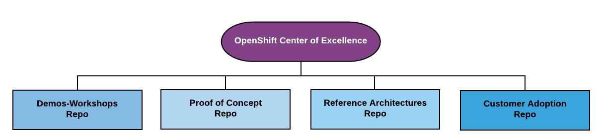

OpenShift COE Overview
This Git Organization is intended to assist OpenShift SME’s with a number of core areas related to solution architectures.
- The diagram below depicts the core areas covered by associated repos.
 Demos/Workshops Repo POC Repo Reference/Arch Repo Customer/Adoption Repo
Demos/Workshops Repo POC Repo Reference/Arch Repo Customer/Adoption Repo
Demo Workshops Repo POC-RepoReference Architecture RepoCustomer Adoption Repo
## Demos-Workshops - Demos-Workshops
Test
Demo Workshops Repo POC-RepoReference Architecture RepoCustomer Adoption Repo

-
Demos-Workshops - Demos-Workshops
-
POC’s - POC’s
-
Reference Architectures - Reference Architectures
-
Customer Adoption - Customer Adoption